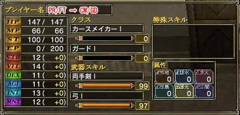

上位ランクを取得することで、基礎パラメーターの下限値が上昇します。それでは初めて取得する上位ランクに応じて、下限値の変化が出るのか調べました。画像を全て見るのが面倒くさい方のために先に書いておきますが、クラスによって”癖”は出ます。一部値が変化していないものがありますが・・・。
ローグ・レンジャーにおける変化(残念ながら変化無し)
(ローグ・レンジャーのランク2取得後のローグ・レンジャー)
(プリースト・ファイターのランク2取得後のローグ・レンジャー)
プリースト・ファイターにおける変化(MNT、MP に変化が出る)
(ローグ・レンジャーのランク2取得後のプリースト・ファイター)
(プリースト・ファイターのランク2取得後のプリースト・ファイター)
カースメイカー・ガードにおける変化(INT、MP に変化が出る)

(ローグ・レンジャーのランク2取得後のカースメイカー・ガード)

(プリースト・ファイターのランク2取得後のカースメイカー・ガード)
このようにクラスに応じてステータスに癖が出ます。今回はランク1の変化ですが、これがランク2、ランク3となると癖の出方はさらに大きくなると思います。現在はどのクラスもそれなりにプレーできますが、さらなる上位ランクが実装される頃にはそれぞれのプレイヤーが専門職を持たざるを得ないかもしれません。 |